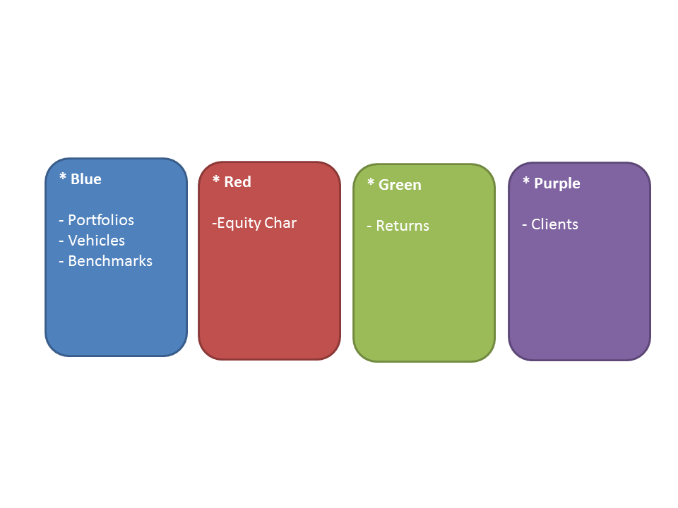
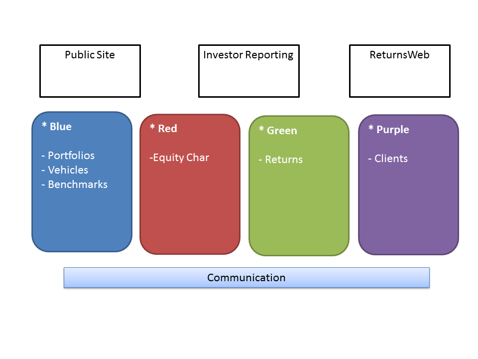
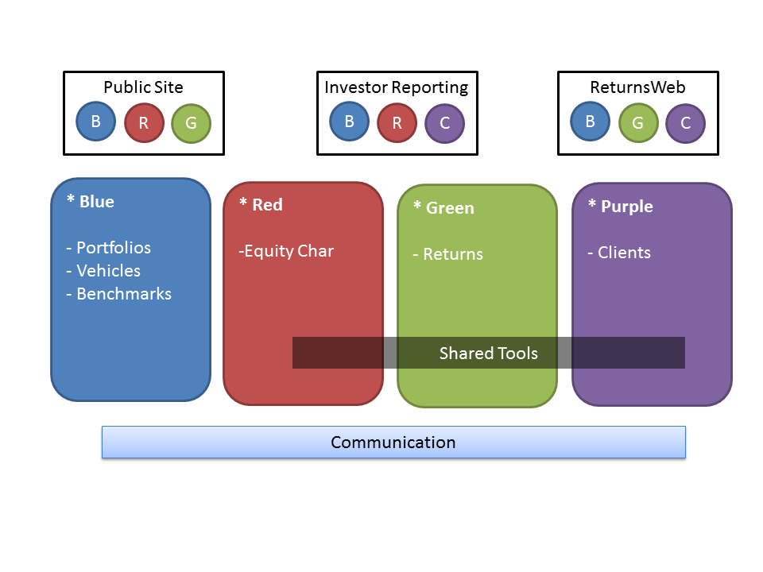

Service Oriented Architecture
for CRM
Tenets of Service Orientation
- Services are autonomous
- Services have explicit boundaries
- Services share contract & schema, not class or type (or database)
- Service interaction is controlled by policy
Microsoft
Service
- The technical authority for a specific business capability
- All data and business rules reside within the service
- Nothing is "left over" after identifying services
IBM
System
- "Deployable" Artifact
- Has Physical Boundaries
- Examples: Returns Web, GIPS, Public Site
Service
- Technical Authority for a Business Capability
- Logical Boundaries
- Examples: Performance, Vehicles, Equity Characteristics
hypothetical Example
Fast Forward 10 - 15 Years



Microsoft CRM
and Service Oriented Architecture
Microsoft CRM is an application development platform that ships with a pre-configured CRM.
In terms of SOA CRM is...
- A System
- A Part of a Business Capability
- Shared Tool (Not Yet)
Any third party product will NOT be around forever.
Focus on Business Capabilities
We are experts in client data and the sales pipeline. Currently, we leverage Microsoft CRM.
Learn where current client data business logic exists. Have a long term strategy to "govern".
Develop a Technical Strategy
Agree what business capabilities are appropriate and NOT appropriate for the platform.
Create a data integration strategy.
Understand when we VIOLATE our guidelines and how we address long term.
Upgrade CRM versions on a cadence.
Create a Testing Strategy
Create disciplined testing strategy.
Automated testing MUST be a priority.